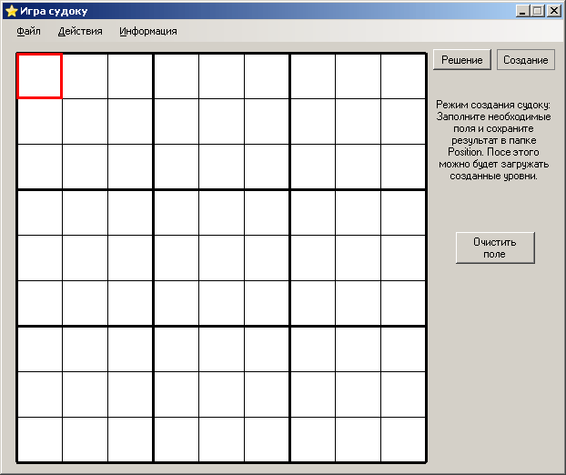

В режиме создания новых судоку Вы можете создавать и сохранять свои собственные судоку. Для перехода в режим создания нажмите на кнопку "Создание", как показано на рисунке:

Если перед этим был активирован режим "Решение", то на поле останутся постоянные клетки. Временные будут удалены.
Перемещаясь по полю проставьте в нужных местах нужные цифры. После этого выберите пункт меню "Сохранить". Сохраните новый уровень в папку Position (Позиции).
В любой момент можно сменить режим на "Решение". При этом все заполненные клетки будут очищены. Поэтому перед сменой режима будет предложено сохранить изменения.